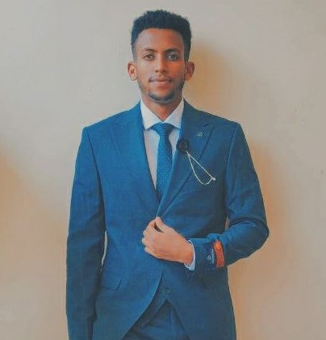

Ibrahim Shikur

summary
Dynamic and versatile Full-Stack Developer, Video Editor, and Graphics Designer with a proven track
record of delivering high-quality web and app development projects. Adept at creating visually
compelling graphics and engaging video content using tools such as Adobe Photoshop and CapCut.
Highly skilled in both front-end and back-end development, with a keen eye for detail and a passion
for innovative design. As a dedicated freelancer, I bring flexibility, creativity, and a client-focused
approach to every project. Seeking to leverage a diverse skill set to contribute to a forward-thinking
company and drive impactful digital solutions.
Education
- full-stack development-Udemy(2024)
- video Editing-Young Millionaier Acadamey(2022)
- Graphics Design-Young Millionaier Acadamey(2022)
- Bachelor degree of pharmacy-Universal medical college(2018-2023)
Work Experience
- video editing and graphics design-IBM general trading PLC
Mar 2022 - Feb 2024
- Responsibilities:
- Designed graphics and layouts for digital and print media using Adobe Photo shop.
- Edited and produced video content with CapCut for marketing and promotional use.
- Collaborated with clients to deliver customized visual solutions.
- Managed multiple projects, ensuring timely delivery and high-quality results.
- Achievements:
- Increased client engagement through high-profile projects.
- Received positive feedback and repeat business from clients.
Skills
- Full Stack Web Development
- Video Editing
- Graphics Design
- Adobe Photoshop
- CapCut Video Editor
- Customer service: ⭐️⭐️⭐️⭐️⭐️
Award And Certifications
Other
{kind=link}
{kind=link}
{kind=link}
{kind=link}
{kind=link}
{kind=link}